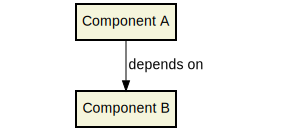

Getting Continuous with Maven and srcdeps
Peter Palaga2017-01-28
About me
Peter Palaga
- Sustaining Engineer for JBoss EAP at Red Hat
- The main author of srcdeps
- https://twitter.com/ppalaga
- Views in this presentation are my own
Objective
Tweak Maven so that large projects can be developed in a more continuous manner
Objective
Tweak Maven so that large projects can be developed in a more continuous manner
Continuous Integration and Continuous Delivery
Continous Integration (CI) Martin Fowler (2006)
A practice where
- Engineers merge their changes frequently (daily!)
- Each integration verified by an automated build (including tests)
- Errors detected as early as possible
Continuous Delivery (CD) Martin Fowler (2013):
- Builds on top of CI
- Coding done in such a way that the software releasable to production at any time
- Small change sets pass automated deployment pipeline in short cycles
Why is CI/CD good?
- Value to the customer faster
- Quality through repeatability and automation
- Reduce costs and risk
Objective
Tweak Maven so that large projects can be developed in a more continuous manner
Large Maven based projects (1/2)
Maven based
- Have Maven like dependencies (identified by GAV)
- Written in any JVM language (Java, Ceylon, Groovy, Scala, Kotlin, …)
Large
- Multiple components living in multiple separate source repositories
- The components have independent release cycles
- The components depend on each other, building a dependency hierarchy
Large Maven based projects (2/2)
Take WildFly as an example
Figure 1. WildFly Components dependencies, strongly simplified
Objective
Tweak Maven so that large projects can be developed in a more continuous manner
Change’s travel through the component hierarchy
Given that Component A depends on Component B

- Merge a change (Fix, Feature, …) in B
- Wait till B gets released
- Upgrade B in A
- Optionally adapt A
- Test B inside A
- Bug in B uncovered by A’s integration tests? - Goto 1
- Integration in A successful? - wait for the release of A
What is wrong with the above process?
- Infrequent releases of components slow down the delivery
- Make developers unfocused through task switching
- Releases may collect multiple changes → regression causes are harder to find
Objective
Tweak Maven so that large projects can be developed in a more continuous manner
How can we propagate smaller change sets faster?
With the stock Maven, there are only two options to shorten the cycles:
- Use SNAPSHOTs
- Relase often
Remote SNAPSHOTs are evil
You never know what you get
- local/remote SNAPSHOT?
- latest today != latest tomorrow
The build of a component depending on another SNAPSHOT component is not reproducible
Best practice: Remote SNAPSHOTs always off (esp. for CI)
Release components often

- 100% reproducible
- Releasing may cost developers' time (doable by CI)
- Many short living dev releases clutter maven repositories
The component’s team must want to release
- Governed outside of one’s own organization?
Let’s forget the stock Maven for a moment…
- The build of every git commit deterministic enough
- Why don’t we depend on git commits directly?
- We could let Maven build the dependencies on the fly from their sources!
Welcome srcdeps!
- Reconsider if releasing of the components is necessary at all (see further)
- In any case, we can avoid releases done just for the sake of testing and integration
Change’s travel with srcdeps
Parts in bold eliminated
- Merge a change (Fix, Feature, …) in B
- Wait till B gets released
- Upgrade B in A
- Optionally adapt A
- Test B inside A
- Bug in B uncovered by A’s integration tests? - Goto 1
- Integration in A successful? wait for release of A
How srcdeps work (1/2)
Three basic ideas
-
Coin a convention for version strings to express the commit ID to build the given dependency from
<dependency> <groupId>org.my-group</groupId> <artifactId>my-artifact</artifactId> <version>1.2.3-SRC-revision-deadbeef</version> <!-- deadbeef is a git commit ID --> </dependency> - Provide a configuration that maps dependency artifacts to source repository URLs
- Build the artifacts as they are requested from the Local Maven Repository by providing our implementation of the local repository
How srcdeps work (2/2)
When an artifact with *-SRC-revision-{commitId} version is looked up in Maven local repo
- Find a git URL for it
- Checkout the source
- Change the versions in the
pom.xmlfiles to whatever*-SRC-revision-{commitId}was requested - Build and install locally
Demo time
Let’s have a simple project
public class Demo {
public String sayHello() {
return "Hello World!";
}
}
public class DemoTest {
@Test
public void sayHelloTest() {
Assert.assertEquals("Hello World!", new Demo().sayHello());
}
}Say that we need to change something in junit
public class Demo {
public String sayHello() {
return "Hello World!";
}
}
public class DemoTest {
@Test
public void sayHelloTest() {
Assert.assertDevConf(new Demo().sayHello());
}
}Clone junit
Add what is necessary
public class Assert {
public static void assertDevConf(String actual) {
assertEquals("Not the right conference!!!", "Hello DevConf!", actual);
}
...Commit and push whereever appropriate
Intialize srcdeps configuration in the depeendent project
mvn org.srcdeps.mvn:srcdeps-maven-plugin:3.0.1:initThat generates .mvn/extensions.xml and .mvn/srcdeps.yaml files
.mvn/extensions.xml
<extensions>
<extension>
<groupId>org.l2x6.srcdeps</groupId>
<artifactId>srcdeps-maven-local-repository</artifactId>
<version>3.0.1</version>
</extension>
</extensions>- Maven Core Extensions since Maven 3.3.1
- Allows for replacing substantial parts of Maven by our own custom implementations
Much more powerful than the plugin API
- Parent, BoM imports are looked up earlier than any plugin code can be invoked
.mvn/srcdeps.yaml
configModelVersion: 2.0
repositories:
junit:
selectors:
- junit # a groupId[:artifactId[:version]] pattern, optionally with * wildcard
urls:
- git:https://github.com/ppalaga/junit4.git- A mapping from artifacts to git URLs
- Plus some other options
Upgrade junit in the dependent project
...
<dependency>
<groupId>junit</groupId>
<artifactId>junit</artifactId>
<scope>test</scope>
<version>4.13-SRC-revision-fd0a1c029b99277c955417b0c2b294000d9bf7f4</version>
</dependency>
...Build the dependent project
cd srcdeps-demo
mvn clean test
...
Failed tests:
sayHelloTest(org.srcdeps.demo.DemoTest):
Not the right conference!!! expected:<Hello [DevConf]!> but was:<Hello [World]!>
...Fix Demo.sayHello() to return "Hello DevConf!"
cd srcdeps-demo
mvn clean test
...
Tests run: 1, Failures: 0, Errors: 0, Skipped: 0
...
BUILD SUCCESSQ.E.D.
Interesting locations
- The source dependency was built under
${local.maven.repo.dir}/../srcdeps/${groupId}, typically~/.m2/srcdeps/${groupId} - The source dependency was installed in the local Maven repo, typically `~/.m2/repository
Miscellaneous srcdeps features
Dependencies can refer to not only commits, but also branches and tags:
1.2.3-SRC-revision-{myCommitId}1.2.3-SRC-branch-{myBranchName}1.2.3-SRC-revision-{myTagName}
Source dependencies work for vitually any kind of a dependency incl. parent, managed imports and even plugins
Configurable via .mvn/srcdeps.yaml:
- Configurable verbosity of dependency builds
- Custom arguments for dependency builds, e.g.
-Dcheckstyle.skip -DskipTestsby defaultbuildTimeout- By default
failWith: {goals: release:prepare}to prevent releases with source dependencies
Releases with source dependencies: yes or no?
As long as deloyment of artifacts to public Maven repositories is meant
NO
Because tools unaware of
srcdepswill see the-SRC-deps as non-available- IDEs, static pom.xml analysers, srcdeps-unaware build tools…
Delivery of binaries to production?
- Docker image, fat jar, or even war or ear
Why not?
- Nobody will pull it as an old-style maven dependency
Limitations
Can you think of any?
- Tools unaware of
srcdeps(IDEs, static pom.xml analysers, …) will see the-SRC-deps as non-available - Only Maven and git supported ATM (contributions welcome!)
However immutable git commits are, they can still disappear from repos, or even the whole repo can be deleted
- Best practice: use
srcdepsonly against your own repos or your own mirrors of third party repos
- Best practice: use
There is still a few things that may differ among devs: java version, mvn version
- Projects should use
mvnwwith a fixed mvn version - Enforcer plugin for Java version
- Projects should use
The
-SRC-artifacts (jars, wars, …) built by you and me will typically not be binary equal- Typically will make no harm
- Where would this matter actually?
Other use cases for srcdeps
Dependency project dead or not releasing fast enough
- Fork and use as a source dependency
- No consent from the dependency project needed
Dependency project doing nasty things
- Accept only some of their changes (e.g. security fixes) in your fork and throw away all that can harm your stability
- Again, no consent from the dependency project needed
History of srcdeps
Created around October 2015 during my time in Hawkular https://github.com/hawkular/
- A greenfield project with several components
- To speedup the integration of components
- Positive feedback, still in use
Pull request to introduce
srcdepsto WildFly Core open this week- Discussion in progress on wildfly-dev@lists.jboss.org
- Looks like
srcdepswill be allowed in pull requests but will not be allowed to be merged to stable branches, such as master → a partial productivity win for the submitter
srcdeps project status
- All code and contributions are under Apache License v2
- Documentation: https://github.com/l2x6/srcdeps/tree/master/README.adoc
- Quickstarts: https://github.com/l2x6/srcdeps/tree/master/srcdeps-maven-quickstarts
- Issues and discussions: https://github.com/l2x6/srcdeps/issues
- https://twitter.com/ppalaga https://twitter.com/jpkrohling
Contributions welcome!
Things to remember about srcdeps
- Eliminates the idle time when waiting to a release of a dependency
- Shortens the integration/delivery cycles in complex dependency hierarchies
- May eliminate the need for a shared Maven repository
- Gives power to the consuming project because no action or consent from the dependency project required
Thanks!
/